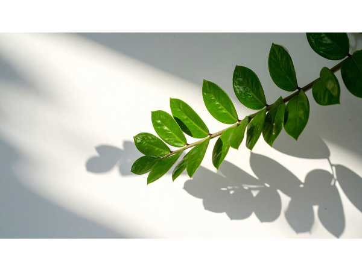

Zamioculcas zamiifolia
Common Names: ZZ Plant, Zanzibar Gem, Eternity Plant, Aroid Palm, Emerald Palm
Local Name: ZZ Chedi (Tamil/Hindi)
Family: Araceae
Origin: Eastern Africa (Kenya, Tanzania, Zimbabwe)
Plant Type: Perennial evergreen succulent herb
Average Lifespan: Perennial; can live for decades with minimal care
| Growth Habit | Upright, clumping plant with arching pinnate fronds growing from underground rhizomes |
| Plant Size | 60–90 cm tall; slow-growing |
| Leaves | Pinnate, glossy dark green leaflets; waxy surface; 40–60 cm long fronds |
| Flowers | Small, pale yellow-white spathe; rarely flowers; inconspicuous |
| Root System | Large, fleshy underground rhizomes store water; extremely drought-tolerant |
| Climate | Tropical to subtropical; tolerates dry indoor conditions |
| Temperature Range | 15–35°C; frost-sensitive |
| Soil Type | Well-drained potting mix; sandy or loamy; never waterlogged |
| Soil pH Preference | 6.0–7.0 |
| Sun Requirement | Low to bright indirect light; one of the best plants for dark corners |
| Water Requirement | Very low; water every 2–4 weeks; rhizomes store water; overwatering is the main risk |
| Can it Grow in Pots? | Yes; ideal indoor container plant; thrives in neglect |
| Fertilizer Schedule | Once or twice a year with diluted balanced fertilizer during growing season |
| Common Pests | Mealybugs, scale insects; generally very pest-resistant |
| Common Diseases | Root rot from overwatering; leaf yellowing from too much direct sun |
| Propagation by Cuttings | Leaf cuttings or stem cuttings in well-drained mix; slow to root (2–4 months); division of rhizomes is faster |
| Water Usage | Extremely low; ideal for water-scarce environments and low-maintenance gardens |
| Biodiversity Benefits | Air-purifying indoor plant; removes toxins; all parts toxic if ingested — keep away from pets and children |
Add your field observations here.